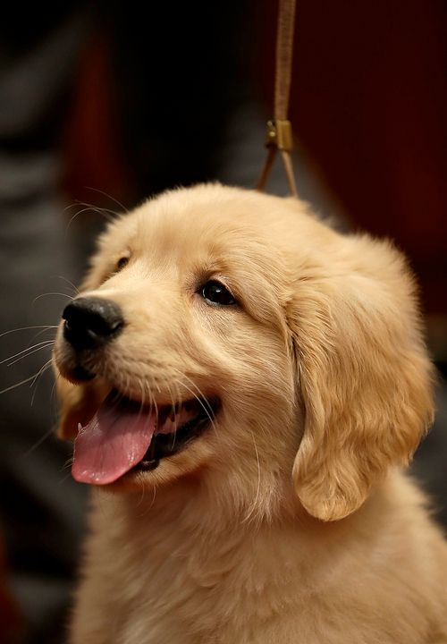

Los perros Golden Retriever son una raza proveniente de Escocia.
Es un perro muy fiel y en muchos lugares son utilizados para cazar.
En el ámbito doméstico son muy cotizados, debido a que son animales muy cariñosos, juguetones y fieles.
Aquí puedes ver un poco más de información sobre Golden Retrievers: Aqui
¡Son bellos!
Aqui te dejo unos links para que veas más:
¡¡Cuando son bebés, son aún más lindos!!
